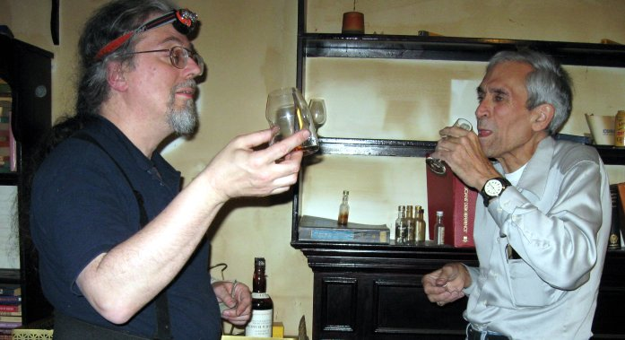

Prior chapter of the quest — Up to Malt home — Continue the saga
© 2011, 2021 Literary Estate of M.A.Padlipsky & William D. Ricker.
Mike's last voluntary or non-medical transaction was to buy from another collector found on-line the "MOHM", Glen Grant Army&Navy 14yo "Magnificent Old Highland Malt", the unobtainable dram that fueled his obsession with single malts nearly 40 years ago, as set out in his Prolegomena.
It arrived after he died, but he died knowing it was his, so I trust he counted it at least a Pyrrhic victory on his quest. As his literary heir & executor, I am hereby updating the tale on-line to include this epilogue.
The irony gets deeper - the seller also survived the transaction only a week. So we opened the MOHM and toasted Mike and Floyd with it, as the seller's daughter requested.
I 'netmailed' the seller's daughter –
Sadly, Mike Padlipsky did not live to hold, let alone open, the bottle your father Floyd sold him.
Russ emailed us
Ironically, [Mike] had finally located a bottle of his long-sought MOHM (14 year Glen Grant, Army-Navy Stores bottling). I had to handle the actual purchase and receipt, because he wound up back in the hospital for the second time in a week having checked himself out against advice in order to be able to agree to the transaction. It was finally delivered by FedEx from the collector in Texas 36 hours after [Mike's] passing.
I knew then we should toast Mike with *this* bottle.  It's last two owners had died. I'm not particularly superstitious, but as the third owner in three months, it might be good for my surviving the flight back to Boston if Russ and I opened it now and toasted them, so open and toast we did.
And then, Russ forwarded us your [ i.e., the seller's daughter's] message [ informing us the seller, Floyd had died shortly after posting the parcel] We have naturally honored your [her] request [ that Mike toast her late father Floyd with it ] as best we could: we toasted Mike and Floyd jointly with 'their' bottle. It tasted as good as Mike and presumably Floyd expected. We will toast them again at Mike's east coast memorial (to be arranged by colleagues and classmates).
Mike's own words about how much this one bottle meant to him are on-line in the prologue to his whisky notes.[attached]
My preferred inference is that Mike, as the consummate collector, died happy with his success at finally finding this one bottle, just knowing it was in transit, it was his at last.
…The 'Reference Collection' to which Mike sought to add this bottle for nearly 30 years lives on. Those of us with whom Mike shared his love of single-malt scotch will remember Mike and Floyd together whenever we open this scarcest of bottles. (Mike and I practice oxygen-exclusion to allow resealing our reference whiskies: so we can remember Mike and Floyd thus for a very long time.) Mike's quest is not only completed but also validated - this bottle will be our reference standard for the style it represents; it is just as archetypal as Mike believed.
MOHM is as described a fabulous archetypal sherry bomb.
It may have lost a little ethanol and aromatic light notes over its long life, so I don't know that it was as good as when Mike had it decades ago [so perhaps i fibbed a little above], but it is still the most extreme all-sherry scotch I've had.
The overpowering sherry taste/nose was as expected both per Mike and per theory. Doctor Bill Lumsden of Glenmo & Ardbeg says a raw spirit without the natural oils of e.g. Mac or Caol Ila shouldn't be in a first-fill sherry hogshead for full maturation, it'll be overwhelmed by the wood and wine. Thus GG A&N MOHM is effectively a sherry liqueur, the sherry wood provides the flavor and the raw white whisky provides the hit. I suspect the impact in '73 was stronger since the early export single malts were largely refill cask Speysiders. After the recent sherry-finish decade, it's less impressive -- but still a landmark sherry malt.
Macallan 18 was Mike's second choice in the style, first of what was available in 1986 –
1996, but is no longer inexpensive as he notes in 1996 notes. The
2010 Glenfiddich Snow Phoenix is a more-balanced sherry bomb [and appreciated rapidly, oops], and [was] a
far, far better bargain today[in 2011 maybe it still was].
Aberlour and Tomatin are current
leaders in the “More Sherry For Less $ Than Macallan” sweeps for
distiller's standard expression. Tomatin 18 is Stephen Fry's dram,
and very affordable for 18yo; the LA Trader Joe's sometimes per Mike
has had a house bottle Aberlour, even better price than Distillers
Own, but not east coast Trader Joes. [Add Glendronach and Glendullan in 2020.]
Anyway, my feeling is that while Mike would very much have liked to re-experience the original MOHM; taste, that was highly unlikely. Neither bottle nor Mike were unchanged. Even if the bottle was in perfect condition, Mike's quest had recalibrated his palate. The unexpected closure on his abandoned quest for the unobtainable bottle was exactly that, closure. Having serendipitously found the macguffin, what he'd declared the best ever malt, his research for what was second best -- best available – was at its logical end.
It may not be right — but it is a literary construction from a careful selection of known facts that clears up the irony.
I have since acquired a Glen Grant bottle — for about the same price MAP paid for the collectible MOHM 14 — as-new, of similar vintage. It had rested 40 extra years in the sherry butt before being bottled, under the care of one of MAP's and my favorite independent bottlers, Gordon & MacPhail. I would not normally pay that price for one bottle myself, but it ticked three boxes on my check-list —
I'm still not superstitious. But I will say I'm glad Russ and I opened the bottle and toasted Mike and Floyd immediately upon my taking possession. While the bottle was in transit with the freight service, my car was totaled when a fool got sideways on US 1 in clear daylight in light swift traffic leaving me no where to go. I jokingly say that was the bottle's warning that I'd better reclaim it from the shipper and arrange Mike's Wake soon, to share it with more people. And we did.
© 2011, 2021 Literary Estate of M.A.Padlipsky & William D. Ricker.
Prior chapter of the quest — Up to Malt home — Continue the saga